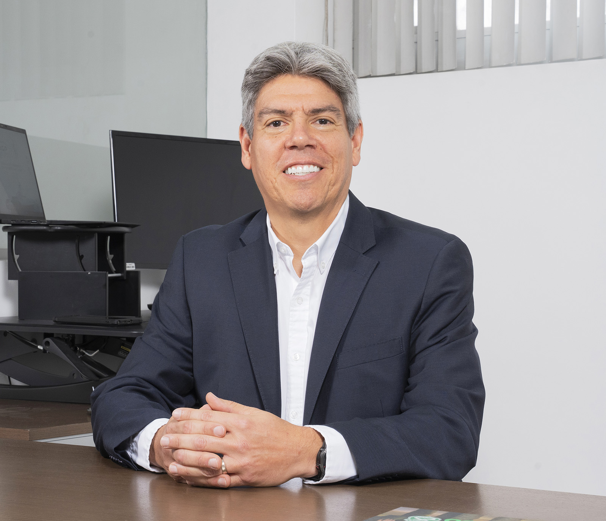

Liderazgo global
Gabriel Jaime
Caballero Luna
CEO global
La visión corporativa y la dirección de AGP, conectadas con la realidad de cada mercado.
La confianza también se construye sabiendo quién está detrás de la marca y quién acompaña al mercado.

CEO global
La visión corporativa y la dirección de AGP, conectadas con la realidad de cada mercado.
Director de México
La relación con el mercado mexicano y el acompañamiento de su ecosistema de blindadoras y profesionales.
La web conecta liderazgo, conocimiento y respaldo local. La evaluación, cotización e instalación para el comprador final continúan con su blindadora.
Prototipo de estructura y mensajes. Cargo de Darío indicado en el brief; biografías, retrato y canales de contacto por validar. Imagen de Gabriel tomada de la página corporativa de AGP.